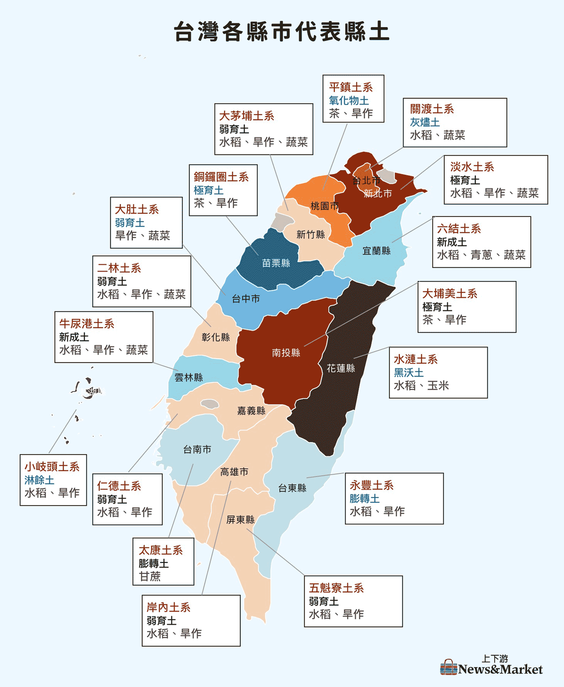

世界 12 種土綱中，台灣奇蹟般擁有了 11 種。這座島嶼在極小面積內，濃縮了全球地質的萬年演化。
我們透過「香氣」轉化沈默的地層，讓冷硬的地質數據成為可以被嗅聞、被觸摸的島嶼記憶。

ANDISOLS
ULTISOLS
ARIDISOLS
VERTISOLS
從土壤開始，聞見台灣
在北投，草山柑不僅是一顆水果，更是這片土地流動的血脈。主理人心絨姐自述「流著北投血脈」，自小在草山腳下長大，她記憶中最深刻的味道，就是那抹帶有火山礦物氣息的酸甜。
在台中東勢的山坡間，有一座用心經營的甘露梨果園。這裡的梨子，口感與甜度全由氣候與農人的細心決定。
台南的鹽田，是一場關於時間與烈日的馬拉松。雖然台灣在民國 91 年因成本考量全面停止了日曬鹽，但這片土地上依舊留存著關於瓦盤鹽田的記憶。
踏入東部縱谷，泥土會隨著季節乾濕膨脹、收縮，像是在緩慢地呼吸。在這裡，我們不談喧囂的訪談，而是跟隨大地的節奏沉靜下來。